The purpose of this lesson is to show how different chords are derived from
the major scale. These chords will obviously be the ones most commonly used
for songs in a major key.
The purpose of this lesson is to show how different chords are derived from
the major scale. These chords will obviously be the ones most commonly used
for songs in a major key.
Note: As a reference, Greg Howard's Chord Compendia can be a useful companion document when going through these lessons.
 As we learned in Lesson 2, Western harmony is
based on thirds. We can derive triads from scales by choosing every other
note of a mode until we have three notes from that mode. Starting with a
C major scale, we start with the C as the root, and skip a third up the
scale to get E as the second note. We skip another third above E to get
G, which is a fifth above the C. The notes C,E and G make up a major triad.
As we learned in Lesson 2, Western harmony is
based on thirds. We can derive triads from scales by choosing every other
note of a mode until we have three notes from that mode. Starting with a
C major scale, we start with the C as the root, and skip a third up the
scale to get E as the second note. We skip another third above E to get
G, which is a fifth above the C. The notes C,E and G make up a major triad.
Here are the triads derived from modes of a C major scale:
| Mode | Notes | Type of triad |
|---|---|---|
| Ionian (major) | C, E, G | Major Triad |
| Dorian | D, F, A | Minor Triad |
| Phrygian | E, G, B | Minor Triad |
| Lydian | F, A, C | Major Triad |
| Mixolydian | G, B, D | Major Triad |
| Aeolian | A, C, E | Minor Triad |
| Locrian | B, D, F | Diminished Triad |
 All major scales will contain seven different triads, which include three
major triads (built on the first, fourth, and fifth notes of the scale),
three minor triads (built on the second, third and sixth notes of the
scale), and one diminished triad (built on the seventh note of the scale).
(As we shall see in a later lesson, an augmented triad is derived from the
harmonic and melodic minor scales.)
All major scales will contain seven different triads, which include three
major triads (built on the first, fourth, and fifth notes of the scale),
three minor triads (built on the second, third and sixth notes of the
scale), and one diminished triad (built on the seventh note of the scale).
(As we shall see in a later lesson, an augmented triad is derived from the
harmonic and melodic minor scales.)
Try playing the above triads from the C major scale. Refer to the chord voicings given in lesson 2.
Exercise 1: Derive the seven triads from the modes of the F major scale. (Answers at end of lesson).
Here are the seventh chords derived from a C major scale:
| Mode | notes (R,3,5,7) | type of seventh chord |
|---|---|---|
| Ionian | C, E, G, B | Major 7 |
| Dorian | D, F, A, C | Minor 7 |
| Phrygian | E, G, B, D | Minor 7 |
| Lydian | F, A, C, E | Major 7 |
| Mixolydian | G, B, D, F | Dominant 7 |
| Aeolian | A, C, E, G | Minor 7 |
| Locrian | B, D, F, A | Half Diminished 7 (Minor 7 b5) |
 A major scale will contain the following types of Seventh chords: Two Major
7 chords (from the 1st and 4th tones), three minor 7 chords (from the 2nd,
3rd and 6th tones), one dominant 7 chord (from the 5th), and one
half-diminished chord (from the 7th).
A major scale will contain the following types of Seventh chords: Two Major
7 chords (from the 1st and 4th tones), three minor 7 chords (from the 2nd,
3rd and 6th tones), one dominant 7 chord (from the 5th), and one
half-diminished chord (from the 7th).
Exercise 2: Derive the seven 7th chords from the modes of a G major scale. (Answers at end of lesson).
A C major 7 chord is a C major triad with a B added as the 7th. Note that B is a major seventh above the root C. The notes in a major 7 chord will always have the following intervals above the (R)oot:
R, Major 3rd, Perfect 5th, Major 7th.
A dominant 7 chord is exactly like a major chord, except that it has a minor 7th. The notes of a dominant 7 chord will always have the following intervals above root:
R, Major 3rd, Perfect 5th, Major 7th.
This chord has an interval of a tritone between its 3rd and 7th tones, which give it a more dissonant sound. A standard blues progression is made up of dominant 7 chords (more on this in a later lesson.) Note that the word dominant is usually dropped when naming this chord (i.e. a G dominant 7 chord is usually just called a G7 chord.
A minor 7 chord is a minor triad with a minor seventh. The intervals in a minor 7 chord are:
R, Minor 3rd, Perfect 5th, Minor 7th.
A half-diminished chord, or minor 7 b5, is exactly like a minor, but with a diminished 5th (or b5). The intervals are: R, Minor 3rd, Diminished 5, Minor 7th. A diminished chord (derived from the harmonic minor scale, as we shall see later) is exactly like the half-diminished chord, except that it has a diminished 7th instead of the minor seventh. Thus a half-diminished chord is a mix between a diminished chord and a minor chord, hence its name. This chord is rarely used in major keys; it occurs much more often in minor chord progressions, particularly a minor II-V-I progression (more on this in a subsequent lesson).
The following shows the intervals that make up the chord types (see Lesson 2 for meaning of symbols):
C Major 7 chord
notes: C E G B
scale tone: R Ma3 P5 Ma7
^ ^ ^
intervals: Ma3 mi3 Ma3
G dominant 7 chord
notes: G B D F
scale tone: R Ma3 P5 mi7
^ ^ ^
intervals: Ma3 mi3 mi3
A Minor 7 chord
notes: A C E G
scale tone: R mi3 P5 mi7
^ ^ ^
intervals: mi3 Ma3 mi3
B minor 7 b5 (or half-diminished) chord
notes: B D F A
scale tone: R mi3 b5 mi7
^ ^ ^
intervals: mi3 mi3 Ma3
Exercise 3: Name the notes for the following chords: G Ma7, E mi7, F7. (Answers at end of lesson).
There are many systems of chord symbols used by different players.
→ Here is a chart ←
you can refer to with most of the various chord symbols in use.
Major 7 chords:
I will use C Ma7 for a C major 7 chord.
C Maj 7 and C Mi7 are also common. Sometimes a triangle
is used between the letter name and the 7.
Dominant 7 chords: I will use G7 for a G dominant 7 chord. Some people use G dom7, but G7 is by far the most common.
Minor 7 chords: I will use A mi7 for an A minor 7 chord. A-7, A min7 and A mi7 are also common.
Half-diminished chords: I will use B min7(b5) for a B half diminished chord. A common symbol is a B followed by a circle with a slash (/) through it. A circle o is often used for diminished chords; thus a circle with a line through it means "half diminished".
Here are seventh chord voicings for the melody strings. These are all voiced with just R-3-5-7. These are all for standard tuning. Make sure you use a fixed-space font such as Courier to view these diagrams. Vertical lines indicate frets, while horizontal lines indicate strings.
|  |  |
|  |  |
Major 7: Play a minor triad who's root is a major third above the seventh chord's root.
Dominant 7: Play a diminished triad who's root is a major third above the seventh chord's root.
Minor 7 b5: Play a minor triad who's root is a minor third above the seventh chord's root.
Although the root should be in the bass, you do not necessarily have to play the other chord tones in order. You can have the 3rd or 5th as the highest tone. Therefore, you can use any inversion of the triad to make up the chord voicing.
Exercise 4: Name the triad you would use starting from the third tone to play the following chords as seventh chords over bass notes: C Ma7, F Ma7, G7, D7, A mi7, D mi7, B mi7(b5), E mi7(b5). Then play each of the chords on your Stick(TM)!
 You will often want to accompany yourself by playing chords on the bass
strings while you play the melody or solo on the melody strings. The
following are chord voicings for the bass strings. Note that you can often
omit the 5th of the chord, unless it is an altered (# or b) 5th (as in the
minor 7 b5 chord.) Therefore, most of the following chords omit the 5th.
You will often want to accompany yourself by playing chords on the bass
strings while you play the melody or solo on the melody strings. The
following are chord voicings for the bass strings. Note that you can often
omit the 5th of the chord, unless it is an altered (# or b) 5th (as in the
minor 7 b5 chord.) Therefore, most of the following chords omit the 5th.
| C Ma7 | ||||
|---|---|---|---|---|
| root on 6th string | root on 7th string | (root on 8th string) | ||
|-R-|---|---|---|---|
|---|---|---|---|---|
|---|---|---|---|---|
|---|---|Ma7|---|---|
|Ma3|---|---|---|---|
^12th fret
|
|---|---|---|---|---|
|-R-|---|---|---|---|
|---|---|---|---|---|
|---|---|Ma3|---|---|
|---|---|Ma7|---|---|
^5th fret
|
|---|---|---|---|---|
|---|---|---|---|---|
|-R-|---|---|---|---|
|---|---|---|---|Ma7|
|---|---|Ma3|---|---|
^10th fret
|
||
| G7 | ||||
|---|---|---|---|---|
| root on 6th string | root on 7th string | (root on 8th string) | ||
|-R-|---|---|---|---|
|---|---|---|---|---|
|---|---|---|---|---|
|---|mi7|---|---|---|
|Ma3|---|---|---|---|
^ 7th fret
|
|---|---|---|---|---|
|-R-|---|---|---|---|
|---|---|---|---|---|
|---|---|Ma3|---|---|
|---|mi7|---|---|---|
^ 12th fret
|
|---|---|---|---|---|
|---|---|---|---|---|
|-R-|---|---|---|---|
|---|---|---|mi7|---|
|---|---|Ma3|---|---|
^ 5th fret
|
||
| A mi7 | ||||
|---|---|---|---|---|
| root on 6th string | root on 7th string | (root on 8th string) | ||
|---|-R-|---|---|---|
|---|---|---|---|---|
|---|---|---|---|---|
|---|---|mi7|---|---|
|mi3|---|---|---|---|
^ 9th fret
|
|---|---|---|---|---|
|-R-|---|---|---|---|
|---|---|---|---|---|
|---|mi3|---|---|---|
|---|mi7|---|---|---|
^ 12th fret
|
|---|---|---|---|---|
|---|---|---|---|---|
|-R-|---|---|---|---|
|---|---|---|mi7|---|
|---|mi3|---|---|---|
^ 7th fret
|
||
| B mi7(b5) | ||
|---|---|---|
| root on 6th string | root on 7th string | |
|-R-|---|---|---|---|
|---|---|---|---|---|
|---|mi3|---|---|---|
|---|mi7|---|---|---|
|---|---|b5-|---|---|
^ 11th fret
|
|---|---|---|---|---|
|---|-R-|---|---|---|
|-b5|---|---|---|---|
|---|---|mi3|---|---|
|---|---|mi7|---|---|
^ 16th fret
|
|
 I attempted to show three voicings for each chord; one with the root on the
lowest string, one with the root on the second lowest (7th) string, and one
with the root on the third lowest (8th) string. For the minor 7 b5 chord, I
couldn't show a chord with the root on the 8th string because it would only
leave us two higher strings for the remaining 3 notes (remember we
shouldn't omit the 5th for this chord. Actually, if the melody implies a
b5, we can sometimes get away with omitting the 5th and using the minor 7th
chord voicings instead. Just be sure not to use a perfect 5th in the chord,
melody or solo!)
I attempted to show three voicings for each chord; one with the root on the
lowest string, one with the root on the second lowest (7th) string, and one
with the root on the third lowest (8th) string. For the minor 7 b5 chord, I
couldn't show a chord with the root on the 8th string because it would only
leave us two higher strings for the remaining 3 notes (remember we
shouldn't omit the 5th for this chord. Actually, if the melody implies a
b5, we can sometimes get away with omitting the 5th and using the minor 7th
chord voicings instead. Just be sure not to use a perfect 5th in the chord,
melody or solo!)
 You'll note that some of the chords above are a bit of a handful when
played on the lower frets. If you have small hands, you may wish to use Bob
Culbertson's technique of using your left hand thumb to play the root of
some of the above chords. Give it a try!
You'll note that some of the chords above are a bit of a handful when
played on the lower frets. If you have small hands, you may wish to use Bob
Culbertson's technique of using your left hand thumb to play the root of
some of the above chords. Give it a try!
 When playing chords for a song, you should try to pick voicings that
minimize your hand movement, and allow the bass to progress somewhat
melodically. Having three possible ways of playing each chord will usually
allow you to keep the sequence of chords around the same fret.
When playing chords for a song, you should try to pick voicings that
minimize your hand movement, and allow the bass to progress somewhat
melodically. Having three possible ways of playing each chord will usually
allow you to keep the sequence of chords around the same fret.
 The best way to learn to play these chords is to go and learn a song that
uses these voicings. I recommend picking out a song or two from a fake book
and learning them with both left hand chords and with two hand chords.
The best way to learn to play these chords is to go and learn a song that
uses these voicings. I recommend picking out a song or two from a fake book
and learning them with both left hand chords and with two hand chords.
 We don't have to stop with the seventh in constructing chords. If we keep
using thirds from the modes, we can add the ninth, 11th and 13th scale
tones for more "colorful" chord voicings. Again, use the mode the chord is
derived from in order to find these tones. If we start with the C ionian
mode, we get:
We don't have to stop with the seventh in constructing chords. If we keep
using thirds from the modes, we can add the ninth, 11th and 13th scale
tones for more "colorful" chord voicings. Again, use the mode the chord is
derived from in order to find these tones. If we start with the C ionian
mode, we get:
| notes: | C | E | G | B | D | F | A | |||||||
|---|---|---|---|---|---|---|---|---|---|---|---|---|---|---|
| scale tone: | R | Ma3 | P5 | Ma7 | Ma9 | p11 | Ma13 | |||||||
| ^ | ^ | ^ | ^ | ^ | ^ | |||||||||
| intervals: | Ma3 | mi3 | Ma3 | mi3 | mi3 | Ma3 |
 However, realize that the 11th tone (F) is a half step away from the Ma3
(E)! This would give the chord a very dissonant sound, when major chords
are usually the most consonant. Therefore, we should either omit the 11th,
or use a #11. The #11 comes from the lydian mode, and will give the chord a
lydian tonality. If you play a major chord with a #11, make sure the
soloist knows to play lydian!
However, realize that the 11th tone (F) is a half step away from the Ma3
(E)! This would give the chord a very dissonant sound, when major chords
are usually the most consonant. Therefore, we should either omit the 11th,
or use a #11. The #11 comes from the lydian mode, and will give the chord a
lydian tonality. If you play a major chord with a #11, make sure the
soloist knows to play lydian!
 We can think of the seventh chords as fathering chord "families" that can
all be extended with 9th, 11th, and 13th tones. Of course, chords using all
these tones will tend to sound very cluttered, so unless that's the effect
you specifically want, the chord will sound better if you only add one or
two extra color tones. The 9th and 13th are probably more common for major
and dominant chords, while the 9th and 11th are perhaps more common for
minor chords. (Note: a dominant 7th chord takes a #11 for the same reason
that a major 7th chord does.)
We can think of the seventh chords as fathering chord "families" that can
all be extended with 9th, 11th, and 13th tones. Of course, chords using all
these tones will tend to sound very cluttered, so unless that's the effect
you specifically want, the chord will sound better if you only add one or
two extra color tones. The 9th and 13th are probably more common for major
and dominant chords, while the 9th and 11th are perhaps more common for
minor chords. (Note: a dominant 7th chord takes a #11 for the same reason
that a major 7th chord does.)
Here is how to construct major, minor and dominant 13 chords:
| notes: | F | A | C | E | G | B | D | |||||||
|---|---|---|---|---|---|---|---|---|---|---|---|---|---|---|
| scale tone: | R | Ma3 | P5 | Ma7 | Ma9 | #11 | Ma13 | |||||||
| ^ | ^ | ^ | ^ | ^ | ^ | |||||||||
| intervals: | Ma3 | mi3 | Ma3 | mi3 | Ma3 | mi3 |
| notes: | G | B | D | F | A | C# | E | |||||||
|---|---|---|---|---|---|---|---|---|---|---|---|---|---|---|
| scale tone: | R | Ma3 | P5 | mi7 | Ma9 | #11 | Ma13 | |||||||
| ^ | ^ | ^ | ^ | ^ | ^ | |||||||||
| intervals: | Ma3 | mi3 | mi3 | Ma3 | Ma3 | mi3 |
| notes: | A | C | E | G | B | D | F | |||||||
|---|---|---|---|---|---|---|---|---|---|---|---|---|---|---|
| scale tone: | R | mi3 | P5 | mi7 | Ma9 | p11 | Ma13 | |||||||
| ^ | ^ | ^ | ^ | ^ | ^ | |||||||||
| intervals: | mi3 | Ma3 | mi3 | Ma3 | Ma3 | mi3 |
 If you look at the intervals between the color tones (9,11 and 13), you'll
realize these three notes all make up triads. For the major and dominant
chords, the color tones make up major triads. For the minor chord, the
color tones make up a minor triad. Thus, a good way to play the above
chords would be to play the seventh chord on the bass strings, while
playing a triad whose root is a whole step up on the melody strings. For
example, here is how you can play the following chords:
If you look at the intervals between the color tones (9,11 and 13), you'll
realize these three notes all make up triads. For the major and dominant
chords, the color tones make up major triads. For the minor chord, the
color tones make up a minor triad. Thus, a good way to play the above
chords would be to play the seventh chord on the bass strings, while
playing a triad whose root is a whole step up on the melody strings. For
example, here is how you can play the following chords:
F Ma13 :
C Ma7 on bass strings, D Ma triad on melody strings.
G 13 :
G7 chord on bass strings, A Ma triad on melody strings.
Ami13 :
Ami7 chord on bass strings, B mi triad on melody strings.
 I've never really seen anyone using extensions for the minor 7 b5 chord,
but try playing a minor 7 b5 in the left hand and a major triad starting a
half step higher (on the b9) in the right hand.
I've never really seen anyone using extensions for the minor 7 b5 chord,
but try playing a minor 7 b5 in the left hand and a major triad starting a
half step higher (on the b9) in the right hand.
That's all for now. Have fun with these chords, and be careful out there!
Ionian = F Ma
Dorian = G mi
Phrygian = A mi
Lydian = Bb Ma
Mixolydian = C Ma
Aeolian = D Mi
Locrian = E dim
Ionian = G Ma7
Dorian = A mi7
Phrygian = B mi7
Lydian = C Ma7
Mixolydian = D7
Aeolian = E mi7
Locrian = F#mi7(b5)
G Ma7 G,B,D,F# E mi7 E,G,B,D F7 F,A,C,Eb
C Ma7 Emi/C bass F Ma7 Ami/F bass G7 Bdim/G bass D7 Edim/D bass A mi7 CMa/A bass D mi7 FMa/D bass Bmi7(b5) Dmi/B bass Emi7(b5) Gmi/E bass
copyright © 1995 Rick Bellinger